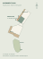

Walk around Scheme J.
Full size on your site. Place two points, check the alignment, then explore.
Open in Chrome on your Galaxy S21.
Download the viewer and both models before travelling.
How to position it onsite
- Establish A and B. They mark the north and south ends of the proposed garage door, projected onto the existing ground. They are 5.00 m apart horizontally. Use the plan below; these are proposed positions, not existing survey marks.
- Start AR and scan the ground. Move the phone slowly over textured ground near A. Aim the ring at A and tap Set A. Walk to B and repeat.
- Check the fit. The viewer uses A for position and B for heading. It keeps the house at 1:1 and reports distance and ground-height differences. If the points disagree, recheck their positions.
- Adjust and explore. Use the height, turn and move controls if needed. Turn groundworks on to see the proposed cuts and lawn. Recheck A/B after walking far or losing tracking.

The initial height follows the original model terrain at A. If the actual ground differs, adjust height. Without established positions, use AR as an approximate size and outlook study.
Phone setup and limits
Use an up-to-date Chrome, Google app and Google Play Services for AR. Allow camera access. Open this page directly over HTTPS; a file attachment or embedded browser may not launch AR.
After saving, reopen this exact page in airplane mode before you leave. Browser storage can be cleared; keep the tab available. The simple Android viewer needs an internet connection and uses automatic placement, without this page’s A/B calibration.
Concept visualisation. Position can drift; phone AR is not survey setout. Existing ground, trees and buildings do not automatically hide the virtual house. Materials are simplified for a phone; geometry comes from the saved Scheme J model dated 9 September 2026.